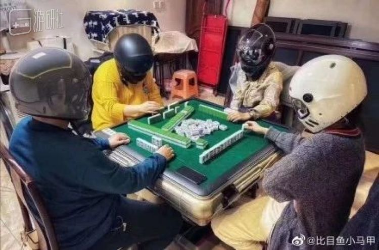
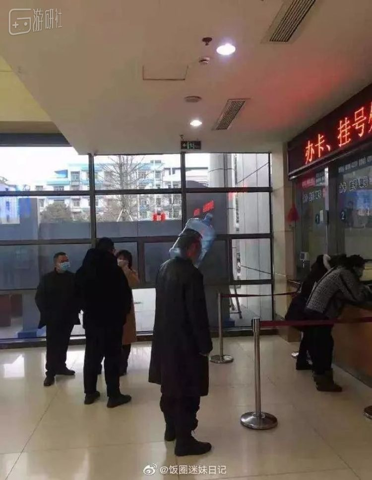
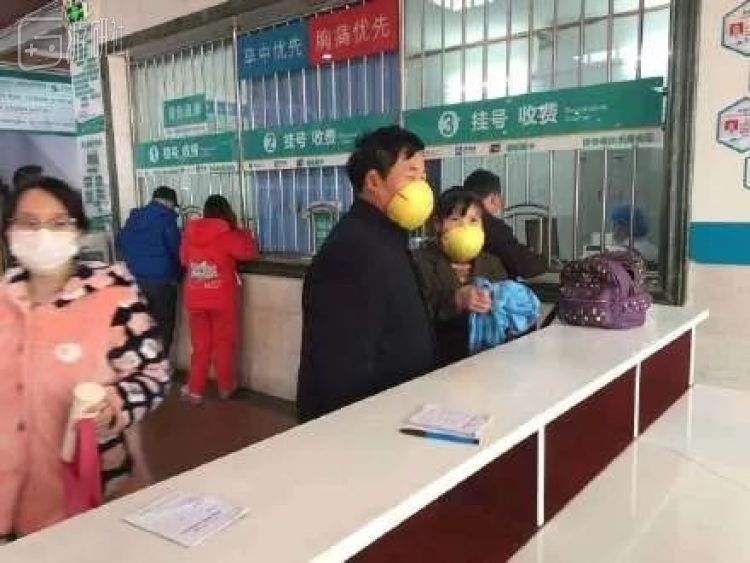
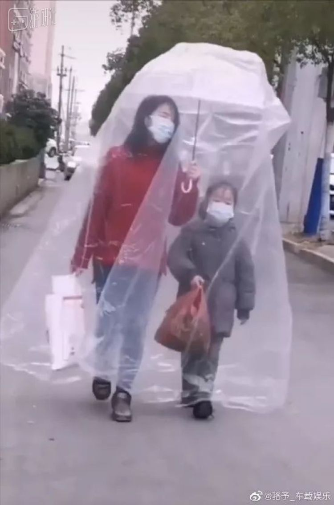
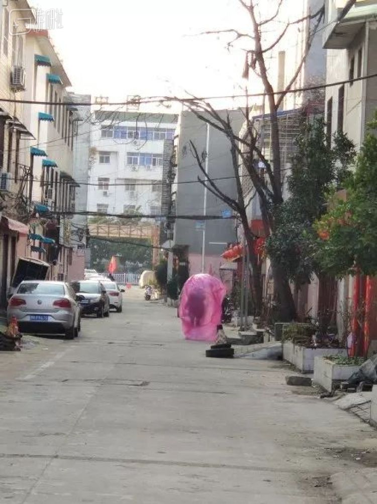

主菜留给参建火神山的女婿：武汉老人的抗疫日记 | 来稿
原文链接 备份链接 【编者按】 28日，我们收到了一位名为“尘香”的读者来信，她是武汉人，退休在家，和丈夫、女儿、女婿一起留守在武汉市江汉区：截至2020年1月29日24时，武汉市累计报告新型冠状病毒感染的肺炎病例已达2261例，死 …
※文中涉及案例均为“反面教材”，切勿模仿。特殊时期，请大家不要存在侥幸心理，一定要规范佩戴口罩。
大家这几天还好吗？
在疫情态势依然紧张的当下，社长最近一直积极响应号召龟缩在家，默默地 享受 承受着闲出屁来的日子，不出门给大伙添乱。
但与此同时，也能见到很多小伙伴愈发耐不住内心的躁动，急于恢复春节期间本该进行的娱乐活动，顶风作案：

这种行为当然是不提倡的。虽然看起来武装严密，但集聚性的活动本身就会大大加重大家的感染风险。与威胁自身安全相比，一时娱乐的代价显然得不偿失。
不过，不得不出门的情况也确实存在。但问题在于，大伙的口罩余粮已经渐渐捉襟见肘，这对许多家庭说确实成了一个麻烦事。
即便各地的口罩生产厂商已经在加班加点地生产，口罩恢复正常供应也指日可待，但依然有居民越来越按捺不住出门的欲望，以至于——
一些群众“机灵”的小脑瓜，终究还是不可避免地运转起来了：

其实，面对没有口罩的情况，我们能猜到人们会寻找出一些看起来合理的替代方案。比如把高领毛衣进一步提高：
比如翻出自己各种压箱底的“护具”：
这些办法虽然并不靠谱，多少还在常人的思考范围之内。
但是你也知道的，中国这片土地上，群众的才智总是让人摸不着范围上限。简单对大伙最近捣鼓出的那些神奇的口罩替代方案进行一下归类，主要能分出以下三种——
手工达人
对于对自己动手能力有足够自信的大哥们来说，世间万物都是相通的。没有口罩？绝对耽误不了办事——他们能研究出一万种替代方案。
靠不靠谱放一边，据我所知至少这种拿柚子做口罩的已经不是第一次出现了：

但是这次，也不知道是不是因为大伙的时间过于充裕，水果外壳做口罩的流派已经蔓延到螃蟹了：
另一边，这种纯净水桶套头的策略本已不算不稀奇：
但还是因为这次病毒的威慑力，而衍生出了进阶版的解决方案：
如果你不怕让自己刚淘换GUCCI西服掉价，也不用追求那么高的制造工艺，只要能将自己的头部团团围住形成自闭空间，材料美观不美观，完全可以不是重点。
但这类办法唯一的问题就是，这肺病还没等得上，咱就率先呼吸困难了：
反正大哥们也不在乎，他们知道，在这紧张的非常时期，能够信任的人只有自己。
善假于物
这会儿的许多市场商店，都因为预防疫情的进一步扩散而要求入场者必须佩戴口罩。
但如果不让通行的原因仅仅是“没戴口罩”的话，这点障碍可拦不住那些小机灵鬼们：
不敢想象，敢于这么做的小伙子究竟要靠什么样的心理素质才能躲过店员异样的眼神。
但仔细想想，能耍出类似操作的朋友，早就不会在乎店员和周遭人们的眼神了。相比之下，他们更喜欢也更善于做的事，是在日常生活中寻找可能性。尤其是能发掘出那些生活中本应深藏不漏的物品的额外价值。
被挖掘出额外价值的还有这个……
和这个……
（咱就想知道宁这到底是什么牌子的，能如此透气？）
以及拿出泡面盒子冲锋陷阵的大爷。只是大爷，咱这玩意除了能让自己喘不上气来，真的没法防细菌（jǔn）。
走火入魔
我知道，我们需要给到病毒足够的尊重，但总还是觉得一些朋友的防护手段有些夸张了。
他们除了佩戴标准的口罩外，往往还自创了额外的防护手段，从经典的油瓶罐子：
到不知道从哪弄到的大塑料袋，封闭自己：
如果被来往的车辆剐蹭到，还会有一定的交通危险
从远处看上去，他们俨然已经与世隔绝，形成了一道看起来无懈可击的空气魔法盾。如果不考虑持续发展因素，这套生态循环系统的闭环，还能让人嗅出几分朋克的味道。

夸张是夸张了点，只要自己不憋，自然是无可厚非。
只是，这种“闭环生态”固然不会受到外界空气影响，但对于个人的交通出行安全来说，显然会给自己和他人造成更多不必要的麻烦。
所以，不管是民间打什么多么想秀出自己的聪明才智，在冷酷的新型肺炎疫情面前，还是希望在尽可能科学的情况下进行防护。
既不要过分紧张，也不必寄希望于自己的“土制口罩”能给到靠谱的保护。当下最安全的防护措施，依然是减少出行的次数；必须要出门的情况下，也请务必要戴好正规的口罩，进行科学合理的防护。
可莫要因为自己一时的“小聪明”招来潜藏的“大麻烦”了。
※文中涉及案例均为“反面教材”，切勿模仿。特殊时期，请大家不要存在侥幸心理，出门一定要规范佩戴口罩。
原文链接 备份链接 【编者按】 28日，我们收到了一位名为“尘香”的读者来信，她是武汉人，退休在家，和丈夫、女儿、女婿一起留守在武汉市江汉区：截至2020年1月29日24时，武汉市累计报告新型冠状病毒感染的肺炎病例已达2261例，死 …
原文链接 备份链接 这个春节，所有的计划被新型冠状病毒打断，每日不断增加的感染人数牵动所有人的心，此时人们，特别是年轻人也愈发注意到卫生、防护等的重要性，但年轻人也发现，这段时间，劝服家人出门戴口罩、减少出门、取消家庭聚会是一件异常艰难 …
原文链接 备份链接 1月31日出门健身的武汉市民（图片由郭晶提供） 这是我的朋友郭晶的日记。 记录了封城期间在武汉独居的外地女性的真实生活体验和心理感受。 这些文字见证了郭晶如何从适应突发危机到重建日常生活，再到尝试帮助他人的过程。 之前 …
原文链接 备份链接 开启更有意思的武汉！请点击上方优良better →点击右上角“…” → “设为星标 ” 1月26日，湖北省人民政府新闻发布会上，武汉市长周先旺戴着口罩，疲惫地说出：“因春节因素和疫情因素，大约有500多万 …
原文链接 备份链接 我住在汉口，是这次疫情的重灾区。那个被查出疫情源头的华南海鲜市场，就在火车站对面，离我家大概20公里。我希望疫情早日结束，对我们国家的经济影响小一些，所有人都能够平安和健康。 口述 | 小 玲 整理 | 沈 林 我叫小 …